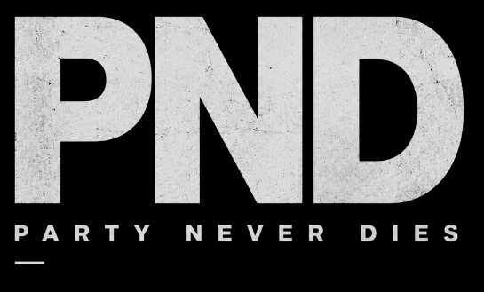

Practice
Street art, graffiti, public space, typography and community memory.

Founders +Founder / Visual Culture / South London
Street art. Photography. Typography. Urban abstraction. A South London artist working between graffiti, spray paint, photography, abstract painting and print design.
Street art, graffiti, public space, typography and community memory.
Photographic fragments become painted and printed abstractions.
Black, grey, concrete, overspray, worn edges and hard type.
Murals, visual essays, print systems and culture-led projects.
Selected Field Notes
A monochrome abstract series inspired by brutalist architecture — layered black and grey acrylic exploring depth, form and shadow.
Kent shoreline towns through memory, escape, arcades, sea air and the changing nature of coastal places.
A statement of creative instinct: graffiti, photography, marks and attitude.